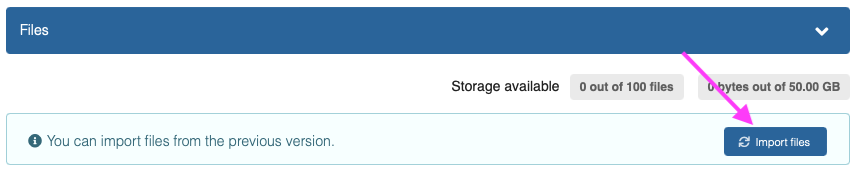
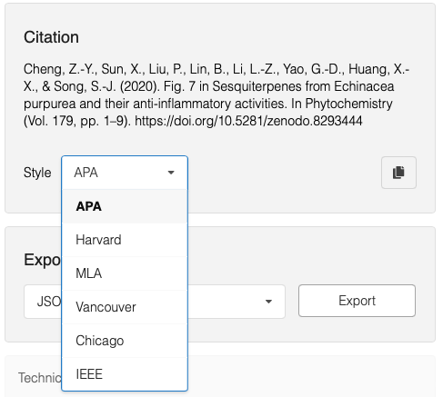

What's changed?
These sections provides a comprehensive overview over changes launched on October 13th, 2023 to existing features in Zenodo. In addition to the changes, we also launched many new features described under What's new.
Overview of the changes:
- Navigation: Uploads to My dashboard
- Deposit: Access rights to visibility
- Deposit: File upload
- Deposit: Field changes
- Deposit: Files in new versions
- Deposit: Community selection
- Communities: Records are published after review
- Communities: Submit to multiple communities
- Communities: Curators can edit metadata
- Communities: Members can view restricted files in records
- Usage statistics: Unique/Total views
- Records: Manage communities
- Records: Fewer citation styles
- Access requests: Shared links
Navigation: Uploads to My dashboard
The Uploads header menu item has been removed in favour of a new My dashboard menu item. See Navigating Zenodo for details about the new navigation.
Deposit: Access rights to visibility
Previously, you controlled access to a record's files by setting the access right field:
- Open access - both metadata and files where publicly accessible.
- Restricted access - metadata was public, files were restricted and user could request access to files.
- Embargoed access - metadata was public, files were restricted until a given date after which they were automatically made public.
- Closed access - metadata was public, files were restricted
The access right field has now been changed into a visibility field with two options (metadata is always public):
- Public: Files are public.
- Restricted: Files are restricted.
In case of restricted files you can choose to:
- Apply an embargo
- Share with specific users or by secret link
- Enable guest and users to request access
This change provides for a more flexible access control to your records, and supports uses that previously weren't possible - e.g. access requests to an embargoed record.
Below table shows a mapping from the old access right field to the new visibility field:
| Files | Public | Restricted |
|---|---|---|
| Open access | X | |
| Embargoed access | X | |
| Restricted access | X | |
| Closed access | X |
1
Previous
2
New: Example showing an open access record.
3
New: Example showing an embargoed access record.
Deposit: File upload
The file upload section of the upload form has received the following updates:
- Automatic start of upload: File uploading will start immediately, so you no longer have to press the green "Start upload" button.
- Default preview: The new file uploader allows you to select which file you want previewed by default on the record landing page.
- Quota: The default quota for size and number of files is now displayed on the form.
1
Previous
2
New
Deposit: Field changes
The deposit form have received several minor changes:
- DOI: The DOI widget has been changed to more clearly ask if an uploader already have a DOI to prevent accidental creation of DOIs.
- Creators/contributors: The full name has been split into family name and given names, and a new name type has been added to also support organisational names. Creators can now also have roles. The difference between creators and contributors is that creators are included in the citation, while contributors are not included.
- Notes: The notes field has been integrated into the additonal descriptions field.
- Language: You can now specify multiple languages instead of only one language.
- Subjects field has been integrated into a combined Keywords and subjects for freeform text fields and subjects from vocabularies.
- Thesis supervisors field has been integrated into the Contributors field by adding the supervisor role.
See describe records for details.
Deposit: Files in new versions
When you create a new version of a record we previously copied all files over from the old to the new version. We have modified this behavior so you now are required to explicitly import the files from the previous version via simply clicking on Import files-button.

Deposit: Community selection
The community selector has been moved to the header, and the communities feature has received several larger changes:
- Reviews: When you submit to a community your record will now go through the community review before the record is published - i.e. your record is not public until the community has reviewed the record. You can still publish your record without a community, and later request to have it included in the community if you wish to use the old workflow.
- Submit to one: You can only submit a draft to one community. Once your record is published, you can request to have it included in multiple communities. It is only the submission of the first draft which is limited to one community.
Above, changes the default behavior of how Zenodo used to behave. We have made the changes to ensure we have a simple and streamlined user experience for our new review feature. Note our legacy REST API which will be deprecated still allows submitting to multiple communities.
1
Previous

2
New
3
In addition we have made it easier to browse and search for communities using a new community selection widget:
Communities: Records are published after review
Previously when you submitted a record to a community, your record would be published immediately, after which the community curator could accept or decline the inclusion of the published record.
Now, a record is no longer published immediately. Instead, the record is published once the community curator accepts the record into the community.
You can still achieve the old behavior by following the below steps:
1
Publish without community: First, publish your record without selecting a community. See deposit documentation.
2
Submit to community: Next, via the record landing page, submit to the desired community. See submit to community documentation.
The change was introduced to enable community curators to review and edit metadata and files prior to the record being published.
Communities: Submit to multiple communities
The workflow to submit to multiple communities has changed significantly. You could previously submit your record to multiple communities directly via the deposit form. This has now changed into a two-step process. In order to submit to multiple communities follow below steps:
1
Publish without community: First, publish your record without selecting a community. See deposit documentation.
2
Submit to community: Next, via the record landing page, submit to multiple communities. See submit to community documentation.
The change is introduced due to our new review feature. When you submit a record to a community, your record is no longer published immediately but instead when the community curators accepts the record. Allowing the submission to multiple communities would make it very complex for curators and uploaders to understand when a record is published.
Note: The change does not affect our legacy REST API from which it is still possible to submit to multiple communities. The legacy REST API will be deprecated in the future so new integrations should not rely on the feature being available in the future.
Communities: Curators can edit metadata
Community curators are now able to edit the metadata of records in their community. Previously a community curator was only able to accept/decline the inclusion of records in their community, but was not able to edit the metadata. Instead they were required to ask for changes to the uploader.
- All new submissions and records published are automatically subject to this change.
- All published records NOT part of a community are automatically subject to this change.
- All published records part of a community prior to Oct 13th, 2023 is NOT yet subject to the change (i.e. community curators cannot edit the record, unless they curator and uploader is the same user).
The last category of records is subject to the following approval workflow. The uploader of the record will be sent a request in the week following the migration to accept that the community curators can edit the metadata.
- If the uploader declines the request, the record will be removed from the community.
- If the uploader accepts the request, the record will be editable by the community curators.
- If the uploader neither accepts nor declines the request within 6 months of receiving the request, the record will made editable by the community curators.
Communities: Members can view restricted files in records
TL;DR - Nobody will gain access to restricted files they didn't already have access to until the uploader accepts it.
Record metadata is always public, but access to files can be restricted. Previously only the uploader could view the restricted files. Now, if a record is part of a community, the community members will also be able to view the restricted files.
All records published prior to Oct 13th, 2023 with restricted files (previously using the restricted access or closed access) AND which was part of a community in which the uploader was not also community owner is NOT subject to the change.
Uploaders of above records will receive a request to accept/decline the ability of curators to view the restricted files:
- If the uploader declines the request, the record will be removed from the community.
- If the uploader accepts the request, the restricted files will be viewable by the community members.
- If the uploader neither accepts nor declines the request within 6 months of receiving the request, the record will be removed from the community.
Usage statistics: Unique/Total views
We have simplified the usage statistics we display on record landing pages. Previous we displayed both unique and total views for both the specific and all versions. We have simplified this to show only the unique views.
The unique views is what gives the most accurate number of real usage. A unique view is counted as a view by a visitor within a one hour window. Total views on the other hand only filter out double clicks, and is thus far easier to game than the unique views.
Records: Manage communities
Previously you could see pending community inclusions requests, as well as remove the record from communities it was part of. We have modified the interface slightly to better support larger number of communities, and in addition we've added the possibility to also submit the record to further communities.
1
Previous
2
New
Records: Fewer citation styles
We previously supported 800+ different citation styles. It however was quite difficult to find the right citation style, so we have reduced the number of citation styles available in the user interface to a short drop-down list. Our REST API continues to support 800+ different citation styles.
1
Previous
2
New

Access requests: Shared links
First, take note of the change for the access right field into a visibility field.
1
Previous: Previously you could enable user to request access to the files in your record by setting the restricted access option and provide a condition under which you give access.
2
New: In the new system you set the visibility field to Restricted. See next step for how to enable users to request access.
3
New: You can enable users to request access from record landing page by click the blue Share-button. In the pop-up click the Access request tab, and check the boxes to enable users and/or guests to request access.
Above described how to enable users to request access to your record. The new interface supports a wider set of use cases and the user interface have therefore been unified to support these cases.
Approving requests
The submitted requests for access will arrive in the new unified requests inbox under My dashboard > My requests or by clicking the inbox-icon in the header. There you can communicate with the requestor (not previously possible), and accept/decline the request.
Viewing requests
Similarly, you can view the already granted access under the Links and People tabs (see screenshot above).